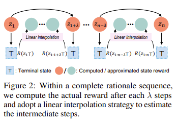
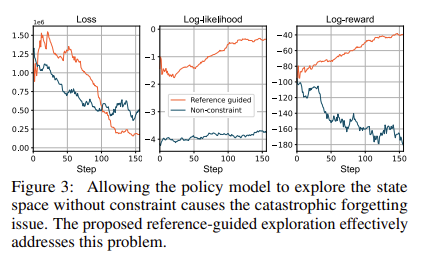
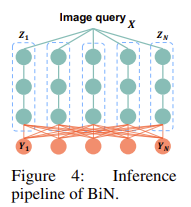
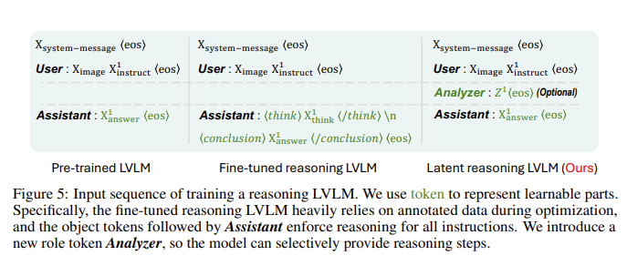
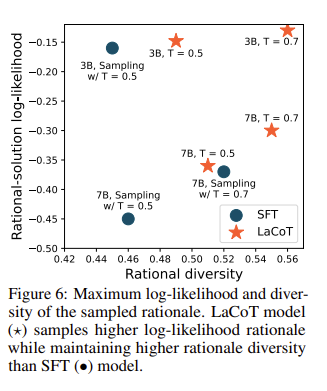
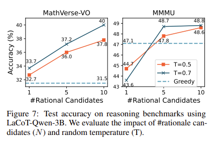
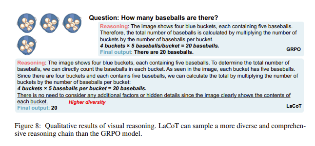
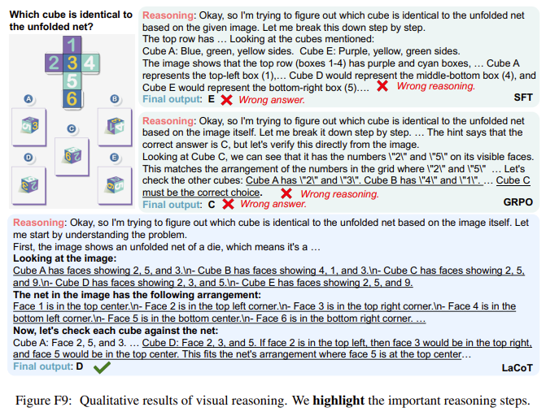
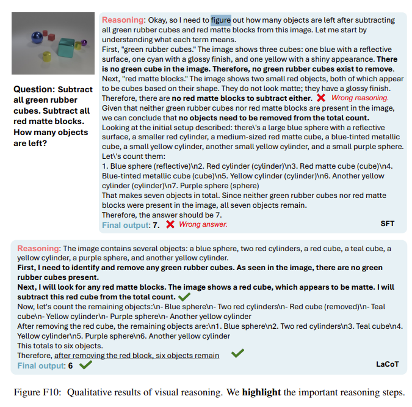

Chain-of-thought (CoT) reasoning is critical for improving the interpretability and reliability of Large Vision-Language Models (LVLMs). However, existing training algorithms such as SFT, PPO, and GRPO may not generalize well across unseen reasoning tasks and heavily rely on a biased reward model. To address this challenge, we reformulate reasoning in LVLMs as posterior inference and propose a scalable training algorithm based on amortized variational inference.
By leveraging diversity-seeking reinforcement learning algorithms, we introduce a novel sparse reward function for token-level learning signals that encourage diverse, high-likelihood latent CoT, overcoming deterministic sampling limitations and avoiding reward hacking. Additionally, we implement a Bayesian inference-scaling strategy that replaces costly Best-of-N and Beam Search with a marginal likelihood to efficiently rank optimal rationales and answers.
We empirically demonstrate that the proposed method enhances the state-of-the-art LVLMs on seven reasoning benchmarks, in terms of effectiveness, generalization, and interpretability. The code is available at github.com/heliossun/LaCoT.
Current approaches for training visual reasoning models each have fundamental limitations that prevent them from fully capturing the diversity and quality of reasoning chains:
Supervised fine-tuning relies on teacher-forced log-likelihood and can only parrot reference traces. It lacks the ability to discover novel reasoning paths, limiting generalization to unseen tasks.
RL methods like PPO and GRPO are constrained by KL penalties that enforce proximity to the SFT baseline, limiting exploration. They also suffer from reward hacking — achieving high scores without genuinely solving problems.
LaCoT treats reasoning as a latent variable sampled from a posterior P(Z|X,Y). Using amortized variational inference via GFlowNets, we train a policy that samples diverse, high-quality reasoning chains proportional to their reward.
GFlowNet training requires token-level rewards, but computing exact rewards for every token in ~1k-token reasoning chains is prohibitive. We propose a linear interpolation strategy: compute actual rewards every λ steps and estimate intermediate rewards, reducing cost while maintaining training quality.
Unrestricted exploration causes catastrophic forgetting; KL penalties kill diversity. RGFN filters candidates against a reference rationale — only "better-than-reference" samples reach the gradient. An annealing schedule allows broad exploration early and tightens standards over training.
Instead of Best-of-N with a biased reward model, we sample N latent rationales, generate answers, and select the one with the highest length-normalized marginal likelihood. This Bayesian approach is principled, interpretable, and eliminates external critic models.
Given a visual question-answer pair (X, Y), the goal is to find latent CoT sequences Z that contribute the most to the conditional likelihood P(Y|X). Unlike prompting methods that produce a single deterministic reasoning chain, we treat Z as a latent variable sampled from a posterior distribution P(Z|X,Y). This posterior is intractable to compute directly due to the normalization term, so we use GFlowNets — a class of amortized variational inference methods — to train an autoregressive policy qθ(Z|X) that approximates this posterior.
At convergence, the policy generates reasoning trajectories with probability proportional to their reward, ensuring higher-likelihood rationales are sampled more frequently while still maintaining diversity across the full posterior.
The Sub-Trajectory Balance (SubTB) objective in GFlowNets requires a reward for every intermediate state (i.e., every token). For long CoT sequences (~1k tokens), computing the full joint log-likelihood R(z1:t⊤) = log P(Xz1:tY) at every position is computationally expensive. We leverage a key insight: the log-likelihood reward is locally smooth — it changes gradually between nearby token positions.
Based on this, we compute exact rewards at anchor points spaced λ tokens apart and linearly interpolate the intermediate values. Under local smoothness assumptions, the interpolation error decays as O(λ2), keeping it negligibly small when λ is moderate (we use λ=8 in all experiments).

Figure 2: Within a complete rationale sequence, we compute the actual reward after every λ steps (green dots) and linearly interpolate intermediate rewards (yellow dots), significantly reducing computational overhead.
Exploration is essential for policy gradient methods, but unrestricted exploration in LVLMs quickly leads to catastrophic forgetting — the model generates fluent but meaningless content with high likelihood and low reward. Traditional fixes like KL penalties or clipped surrogate objectives over-constrain the policy, limiting its ability to discover novel reasoning paths.
Our solution is simple but effective: during training, we sample m candidate rationales from the current policy and compare each one against a reference rationale Zref (a high-quality CoT from teacher models like GPT-4o or DeepSeek-R1). An indicator function gates the loss:
𝕀(Zi) = 1 if R(Zi) > δs · R(Zref), 0 otherwise
The annealing coefficient δs relaxes the threshold early in training (allowing broad exploration) and tightens it after 50 steps (shifting to exploitation). Only candidates that pass this filter contribute to the gradient, effectively preventing collapse while reducing variance without hand-tuned KL penalties.

Figure 3: Without constraint (orange), loss decreases but log-likelihood collapses and reward plummets — catastrophic forgetting. With reference-guided exploration (blue), training remains stable with steadily improving reward.
Best-of-N (BoN) sampling is widely used at inference time: generate N responses, score them with a reward model, and keep the best. However, BoN has three critical weaknesses: (1) significant computational overhead from the reward model, (2) high dependency on reward model quality, and (3) poor scalability.
Our BiN inference strategy eliminates all three issues. The procedure is:
Step 1: Sample N latent rationales Zi from the trained policy qθ(Z|X).
Step 2: For each Zi, generate a corresponding answer Yi from the reasoning LVLM πΦ.
Step 3: Compute the joint likelihood πΦ(ZiYi|X) for each pair.
Step 4: Estimate the marginal likelihood by normalizing over sequence length |ZiYi|.
Step 5: Select the answer with the highest estimated marginal likelihood as the final output.
By treating rationales as integration variables and ranking answers via length-normalized marginal likelihood, BiN provides a principled, probabilistically justified selection criterion — no external reward model needed.

Figure 4: BiN inference pipeline. Given image query X, sample N latent rationales, generate corresponding answers, and rank by length-normalized marginal likelihood.
The LaCoT system consists of two models that work together:
Reward model / Answer generator (πΦ): A pre-trained LVLM (Qwen2.5-VL-3B or 7B) fine-tuned with SFT on a mixture of visual reasoning datasets from LLaVA-CoT and R1-Onevision. We introduce a new special token Analyzer in the input format, so the model can selectively provide reasoning steps rather than being forced to reason for every instruction.
Rationale sampler (qθ): Initialized from πΦ and optimized using LoRA (r=64, α=128) with the RGFN objective on a focused subset of 3k visual reasoning samples. Teacher-generated CoTs (from GPT-4o or DeepSeek-R1) serve as reference rationales.

Figure 5: Input sequence comparison. Pre-trained LVLMs answer directly; fine-tuned models always reason via the Assistant role; LaCoT introduces an Analyzer role for optional latent reasoning, keeping the reasoning chain separate and flexible.
We evaluate LaCoT on seven visual reasoning benchmarks spanning mathematical reasoning (MathVista, MathVision, MathVerse), multi-discipline understanding (MMMU, MMMU-Pro), and general multimodal evaluation (MMVet, MME). Our 7B model is the best open-source LVLM across most benchmarks and narrows the gap to GPT-4o to less than 3 points.
| Method | MathVista mini |
MathVision full |
MathVerse vis-only |
MMMU val |
MMMU-pro vision |
MMVet test |
MME test |
|---|---|---|---|---|---|---|---|
| GPT-4o | 60.0 | 30.4 | 40.6 | 70.7 | 51.9 | 69.1 | 2329 |
| Gemini-1.5-Pro | 63.9 | 19.2 | - | 65.8 | 46.9 | 64.0 | 2111 |
| Claude-3.5-Sonnet | 67.7 | - | 46.3 | 68.3 | 51.5 | 66.0 | 1920 |
| InternVL2-4B | 58.6 | 16.5 | 32.0 | 47.9 | - | 55.7 | 2046 |
| Qwen2.5-VL-3B | 60.3 | 21.2 | 26.1 | 46.6 | 22.4 | 61.4 | 2134 |
| LaCoT-Qwen-3B | 63.2 | 20.7 | 40.0 | 48.8 | 28.9 | 69.6 | 2208 |
| LLaVA-CoT-11B | 52.5 | - | 22.6 | - | - | 64.9 | - |
| LLaVA-OV-7B | 63.2 | 11.1 | 26.2 | 48.8 | 24.1 | 57.5 | 1998 |
| MiniCPM-V2.6 | 60.6 | 17.5 | 25.7 | 49.8 | 27.2 | 60.0 | 2348 |
| InternVL2-8B | 58.3 | 18.4 | 37.0 | 52.6 | 25.4 | 60.0 | 2210 |
| Qwen2.5-VL-7B | 63.7 | 25.4 | 38.2 | 50.0 | 34.6 | 70.5 | 2333 |
| R1-Onevision | 64.1 | 23.9 | 37.8 | 47.9 | 28.2 | 71.1 | 1111 |
| LaCoT-Qwen-7B | 68.4 | 24.9 | 43.3 | 54.9 | 35.3 | 74.2 | 2372 |
Table 1: Test accuracy (%) on visual reasoning benchmarks. Bold = best among open-source models; underlined = second best. LaCoT-Qwen-3B outperforms all 7B models on MathVerse-Vision-Only (+13.9% over its base model).
LaCoT-Qwen-3B surpasses larger models like LLaVA-CoT-11B and LLaVA-OV-7B across multiple benchmarks, demonstrating that learning to sample latent CoT is more effective than simply scaling model size.
LaCoT-Qwen-7B achieves 68.4% on MathVista (within 3 points of GPT-4o) and outperforms R1-Onevision (GRPO) by 10.6%, showing clear advantages of amortized variational inference over reward maximization.
We compare RGFN against zero-shot prompting, SFT, and GRPO using Qwen2.5-VL-7B. SFT provides marginal gains but struggles to generalize. GRPO actually hurts performance due to inadequate reward model guidance and limited exploration. RGFN outperforms all baselines by a significant margin.
| Method | MathVista | MathVerse | MMMU |
|---|---|---|---|
| Zero-shot | 63.7 | 38.2 | 50.0 |
| SFT | 62.7 | 38.7 | 50.6 |
| GRPO | 62.6 | 36.8 | 47.9 |
| RGFN (ours) | 68.4 | 43.3 | 54.9 |
Table 3: RGFN vs. baselines using Qwen2.5-VL-7B.
Using the same LaCoT policy model, BiN consistently and substantially outperforms BoN — especially on MathVerse where the gap is +18.8 (3B) and +13.2 (7B) points. Both methods use length-normalized log-likelihood with no external reward model.
| Method | MathVerse | MathVista | MMMU | MMVet |
|---|---|---|---|---|
| 3B w/ BoN | 21.2 | 57.1 | 44.7 | 67.1 |
| 3B w/ BiN | 40.0 | 63.2 | 48.8 | 69.6 |
| 7B w/ BoN | 26.5 | 62.2 | 47.3 | 71.2 |
| 7B w/ BiN | 39.7 | 68.4 | 54.9 | 74.2 |
Table 2: BiN vs BoN using LaCoT-Qwen (3B/7B).
BiN is not limited to LaCoT — it also improves standard SFT models. We apply BiN (N=5, T=0.7) to vanilla Qwen2.5-VL SFT models and observe consistent gains across all benchmarks, confirming its utility as a general inference-scaling strategy.
| Method | MathVista | MathVerse | MMMU |
|---|---|---|---|
| 7B (SFT) | 62.7 | 38.7 | 50.6 |
| 7B (SFT) + BiN | 64.4 | 38.9 | 51.6 |
| 3B (SFT) | 58.7 | 33.3 | 43.1 |
| 3B (SFT) + BiN | 59.4 | 35.2 | 45.0 |
Table 4: BiN improves SFT models without any additional training.
A central hypothesis of LaCoT is that sampling rationales with higher diversity increases the probability of finding answers with higher likelihood. We validate this by measuring both diversity (average inter-sentence similarity) and log-likelihood of sampled rationales.

Figure 6: LaCoT (★) achieves both higher log-likelihood and higher diversity than SFT (●) at both 3B and 7B scales, across different sampling temperatures.

Figure 7: Test accuracy consistently improves with more rationale candidates (N) and higher temperature (T). Going from N=1 to N=5 significantly mitigates hallucination.
Increasing N systematically improves accuracy because it: (i) reduces Monte Carlo variance of the marginal-likelihood estimator (standard error scales as O(1/√N)), (ii) offers broader posterior coverage, mitigating mode-dropping bias, (iii) smooths length-normalization fluctuations, and (iv) enlarges the candidate answer set, elevating the chance that the correct output is observed.
While sampling multiple rationales adds inference cost, LaCoT uses mini-batching (batch size k=5) to generate N rationales in N/k forward passes. Compared to other multi-rationale baselines, LaCoT achieves much stronger performance with comparable or lower inference time.
| Model | #Rationales | Time (N=5) | Time (N=10) | MathVista | MathVerse |
|---|---|---|---|---|---|
| LLaVA-CoT-11B | - | 340s | 830s | 52.5 | 22.6 |
| R1-OneVision-7B | 1 | 32s | - | 64.1 | 37.8 |
| LaCoT-Qwen-7B | 5–10 | 30s | 65s | 68.4 | 39.7 |
Table 6: Average per-sample inference time. LaCoT achieves the strongest results with competitive or better inference speed, thanks to efficient mini-batch rationale generation.
LaCoT generates more diverse, comprehensive, and accurate reasoning chains compared to SFT and GRPO baselines. In the examples below, both SFT and GRPO produce incorrect visual reasoning that leads to wrong answers, while LaCoT systematically identifies the relevant visual information and arrives at the correct solution.
Notably, even when all methods start with similar initial observations, LaCoT's reasoning chain is more thorough — it double-checks visual details, considers alternative interpretations, and explicitly verifies its counting or spatial reasoning before committing to an answer.

Figure 8: LaCoT produces a more diverse and comprehensive reasoning chain than GRPO, explicitly verifying each bucket's contents before computing the total.

Figure F9: On a challenging spatial reasoning task (matching a cube to its unfolded net), both SFT and GRPO produce wrong reasoning. LaCoT correctly identifies the face arrangement and arrives at the right answer.

Figure F10: LaCoT correctly identifies which objects to remove based on material and color properties, while SFT fails to recognize the red matte block.
@article{sun2025lacot,
title = {Latent Chain-of-Thought for Visual Reasoning},
author = {Sun, Guohao and Hua, Hang and Wang, Jian and Luo, Jiebo
and Dianat, Sohail and Rabbani, Majid and Rao, Raghuveer
and Tao, Zhiqiang},
journal = {arXiv preprint arXiv:2510.23925},
year = {2025},
}This research was supported in part by the DEVCOM Army Research Laboratory under Contract W911QX-21-D-0001, the National Science Foundation under Grant 2502050, and the National Institutes of Health under Award R16GM159146. The content is solely the responsibility of the authors and does not necessarily represent the official views of the funding agencies.